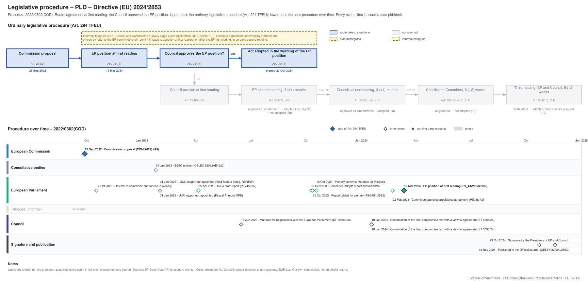

← Regulation timeline › PLD › Legislative procedure · All procedures
Procedure 2022/0302(COD), completed. Drawing: SVG · PNG · PDF (A3) · draw.io · Page as Markdown: pld.md
| Stage | Completed, published 18 Nov 2024 |
|---|---|
| Route (Art. 294 TFEU) | Agreement at first reading: the Council approved the EP position |
| Latest activity | 18 Nov 2024 · Signature and publication: Published in the Official Journal (CELEX 32024L2853) |

| Committee | Role | Rapporteur | Shadow rapporteurs |
|---|---|---|---|
| IMCO Internal Market and Consumer Protection | Responsible | Vlad-Marius Botoş (Renew), appointed 31 Jan 2023 | Maria-Manuel Leitão-marques (S&D), Kosma Złotowski (ECR), Karen Melchior (Renew) |
| JURI Legal Affairs | Responsible | Pascal Arimont (EPP), appointed 31 Jan 2023 | Sergey Lagodinsky (Greens/EFA), Emmanuel Maurel (The Left) |
| ITRE Industry, Research and Energy | Opinion | not yet appointed | – |
| ? | Role not given | not yet appointed | Krzysztof Hetman (EPP), René Repasi (S&D), Eugen Jurzyca (ECR), Marcel Kolaja (Greens/EFA) |
Source: EP Open Data API (participations) and the Legislative Observatory (joint committee, opinions declined); names link to each Member's page on the EP website. The API names no committee for shadow rapporteurs; they are assigned by the EP's order of participants, which groups each committee.
| Date | Actor | Event | Document | Source |
|---|---|---|---|---|
| 2022-09-28 | European Commission | Commission proposal (Art. 294(2) TFEU) | COM(2022) 495 | Cellar procedure file 2022/302 (CELEX 52022PC0495) |
| 2022-10-17 | European Parliament | Referral to committee announced in plenary | EP procedure file | EP Open Data API, procedure 2022-0302 (REFERRAL) |
| 2023-01-24 | Consultative bodies | EESC opinion | CELEX 52022AE4922 | Cellar procedure file 2022/302 |
| 2023-01-31 | European Parliament | JURI rapporteur appointed (Pascal Arimont, PPE) | EP procedure file | EP Open Data API, procedure 2022-0302 (participation RAPPORTEUR) |
| 2023-01-31 | European Parliament | IMCO rapporteur appointed (Vlad-Marius Botoş, RENEW) | EP procedure file | EP Open Data API, procedure 2022-0302 (participation RAPPORTEUR) |
| 2023-04-05 | European Parliament | CJ24 draft report | PE745.537 | EP Open Data API, procedure 2022-0302 (COMMITTEE_TABLING_REPORT) |
| 2023-06-15 | Council | Mandate for negotiations with the European Parliament | ST 10694/23 | Cellar procedure file 2022/302 (Council register) |
| 2023-10-09 | European Parliament | Committee adopts report and mandate | EP procedure file | EP Open Data API, procedure 2022-0302 (COMMITTEE_ADOPTING_REPORT) |
| 2023-10-12 | European Parliament | Report tabled for plenary | A9-0291/2023 | EP Open Data API, procedure 2022-0302 (TABLING_PLENARY) |
| 2023-10-18 | European Parliament | Plenary confirms mandate for trilogues | EP procedure file | EP Open Data API, procedure 2022-0302 (PLENARY_ENDORSE_COMMITTEE_INTERINSTITUTIONAL_NEGOTIATIONS) |
| 2024-01-18 | Council | Confirmation of the final compromise text with a view to agreement | ST 5551/24 | Cellar procedure file 2022/302 (Council register) |
| 2024-01-18 | Council | Confirmation of the final compromise text with a view to agreement | ST 5553/24 | Cellar procedure file 2022/302 (Council register) |
| 2024-02-22 | European Parliament | Committee approves provisional agreement | PE758.731 | EP Open Data API, procedure 2022-0302 (COMMITTEE_APPROVE_PROVISIONAL_AGREEMENT) |
| 2024-03-12 | European Parliament | EP position at first reading (Art. 294(3) TFEU) | P9_TA(2024)0132 | EP Open Data API, procedure 2022-0302 (PLENARY_AMEND_PROPOSAL) |
| 2024-10-23 | Signature and publication | Signature by the Presidents of EP and Council | EP procedure file | EP Open Data API, procedure 2022-0302 (SIGNATURE) |
| 2024-11-18 | Signature and publication | Published in the Official Journal | CELEX 32024L2853 · en.md de.md | EP Open Data API, procedure 2022-0302 (PUBLICATION_OFFICIAL_JOURNAL) |
Every document the Council register, the EU database of the Parliament of Austria or the EP lists for the procedure, with its state: public documents link to the official file; documents that are not public link to their entry in the Austrian database where there is one (metadata only). Status: public; not public; not public, leak available (an unofficial copy is known to circulate outside the institutions; it is neither published nor quoted here). Released: when a document listed as not public was released, by the date of the Council's public PDF (a technical date) or else the day our daily check found it public.
| Date | Document | Kind | Subject | Status | Released | Text |
|---|---|---|---|---|---|---|
| 2022-10-04 | ST 13134/22 | council-transmission | Proposal for a DIRECTIVE OF THE EUROPEAN PARLIAMENT AND OF THE COUNCIL on liability for defective products | public status unknown | – | – |
| 2022-10-04 | ST 13134/22 ADD 1 | council-transmission | COMMISSION STAFF WORKING DOCUMENT Subsidiarity Grid Accompanying the document Proposal for a Directive of the European Parliament and of the Council on … | public status unknown | – | – |
| 2022-10-04 | ST 13134/22 ADD 2 | council-transmission | COMMISSION STAFF WORKING DOCUMENT IMPACT ASSESSMENT REPORT Accompanying the document Proposal for a Directive of the European Parliament and of the Council on … | public status unknown | – | – |
| 2022-10-04 | ST 13134/22 ADD 3 | council-transmission | COMMISSION STAFF WORKING DOCUMENT EXECUTIVE SUMMARY OF THE IMPACT ASSESSMENT REPORT Accompanying the document Proposal for a Directive of the European … | public status unknown | – | – |
| 2022-10-04 | ST 13134/22 ADD 4 | council-transmission | REGULATORY SCRUTINY BOARD OPINION Impact assessment / Product Liability Directive | public status unknown | – | – |
| 2023-01-24 | CELEX 52022AE4922 | opinion | Opinion of the European Economic and Social Committee on ‘Proposal for a directive of the European Parliament and of the Council on liability for defective … | public | – | – |
| 2023-02-01 | ST 5905/23 | council-transmission | Opinion of the European Economic and Social Committee | public status unknown | – | – |
| 2023-03-27 | ST 13134/22 ADD 5 | council-transmission | ANNEX to the Proposal for a DIRECTIVE OF THE EUROPEAN PARLIAMENT AND OF THE COUNCIL on liability for defective products | public status unknown | – | – |
| 2023-04-05 | PE745.537 | ep-draft-report | DRAFT REPORT on the proposal for a directive of the European Parliament and of the Council on Liability for defective products | public | – | – |
| 2023-06-15 | ST 10694/23 | council-position | Mandate for negotiations with the European Parliament | public | – | – |
| 2023-10-12 | A9-0291/2023 | ep-report | REPORT on the proposal for a directive of the European Parliament and of the Council on liability for defective products | public | – | – |
| 2023-11-14 | ST 14178/23 COR 1 | council-note | Opinion of the EDPS | public status unknown | – | – |
| 2024-01-18 | ST 5551/24 | council-confirmation | Confirmation of the final compromise text with a view to agreement | public | – | – |
| 2024-01-18 | ST 5553/24 | council-confirmation | Confirmation of the final compromise text with a view to agreement | public | – | – |
| 2024-01-24 | PE758.731 | agreed-text | PROVISIONAL AGREEMENT RESULTING FROM INTERINSTITUTIONAL NEGOTIATIONS Proposal for a directive of the European Parliament and of the Council on Liability for … | public | – | – |
| 2024-01-24 | ST 5809/24 | council-note | Letter sent to the European Parliament | public status unknown | – | – |
| 2024-03-12 | P9_TA(2024)0132 | ep-position | Liability for defective products | public | – | – |
| 2024-04-18 | PE 7/24 | council-note | DIRECTIVE OF THE EUROPEAN PARLIAMENT AND OF THE COUNCIL on liability for defective products and repealing Council Directive 85/374/EEC | public status unknown | – | – |
| 2024-06-18 | ST 10078/24 | council-note | Proposals under the ordinary legislative procedure expected to undergo the Corrigendum Procedure in the European Parliament (part I) | public status unknown | – | – |
| 2024-09-27 | ST 13760/24 | council-note | Draft DIRECTIVE OF THE EUROPEAN PARLIAMENT AND OF THE COUNCIL on liability for defective products and repealing Council Directive 85/374/EEC (first reading) - … | public status unknown | – | – |
| 2024-09-27 | ST 13760/24 ADD 1 | council-note | Draft DIRECTIVE OF THE EUROPEAN PARLIAMENT AND OF THE COUNCIL on liability for defective products and repealing Council Directive 85/374/EEC (first reading) - … | public status unknown | – | – |
| 2024-10-10 | ST 14358/24 | council-note | Voting result DIRECTIVE OF THE EUROPEAN PARLIAMENT AND OF THE COUNCIL on liability for defective products and repealing Council Directive 85/374/EEC Adoption … | public status unknown | – | – |
| 2024-10-24 | PE 7/24 REV 1 | council-note | DIRECTIVE OF THE EUROPEAN PARLIAMENT AND OF THE COUNCIL ON LIABILITY FOR DEFECTIVE PRODUCTS AND REPEALING COUNCIL DIRECTIVE 85/374/EEC | public status unknown | – | – |
Unofficial Markdown conversions for reading, searching and project folders; only the official document is authentic. "Read" opens the rendered text on GitHub, where a link to a provision (#art-13, #rec-12, #annex-i) jumps to it.
| Date | Stage | Document | Markdown | Read |
|---|---|---|---|---|
| 2024-11-18 | oj | CELEX 32024L2853 | en de | GitHub |
| 2026-05-07 | corrigendum | CELEX 32024L2853R(01) | en de | GitHub |
Comitology committees of Member State representatives give opinions on draft implementing acts (Regulation (EU) No 182/2011); expert groups advise the Commission on delegated acts, guidance and implementation; groups set up by an act itself (e.g. the NIS Cooperation Group) bring together the Member States, the Commission and agencies. Meetings and documents as published in the Comitology Register, the Register of Commission expert groups and on the Commission's pages of these groups, from 2024 on.
Expert group E03995, GROW. Official source: Register of Commission expert groups ↗
No meetings listed.